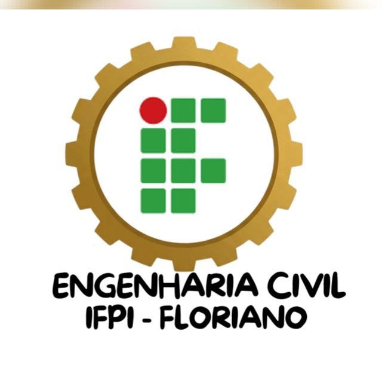
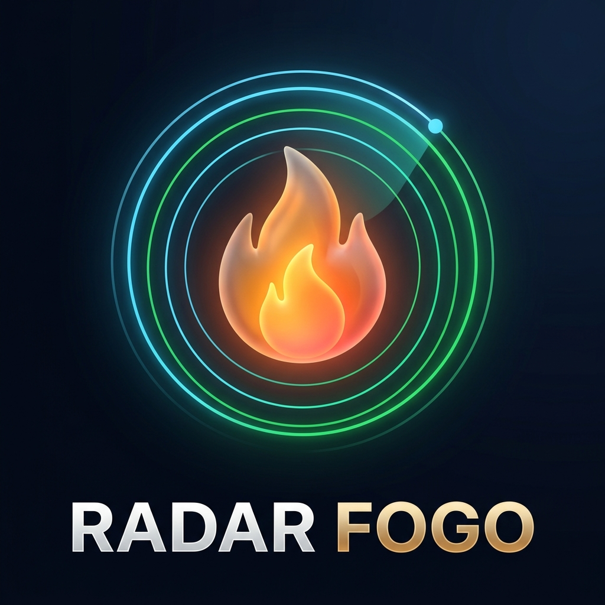

Monitoramento Orbital em Tempo Quase-Real de Queimadas e Clima no Nordeste com Acessibilidade Cognitiva e Design Apple Weather Dark Glass.
Fundo Dark Glass (#070C18) com contraste WCAG AA, cartões translúcidos discretos e leitura confortável sem brilho neon agressivo.
Estrutura previsível em todas as telas: Título → Resumo Simples → Detalhes sob demanda. Um objetivo principal por seção.
Construído em React Native + Expo Router: funciona instantaneamente como PWA na Web, Android e iOS, inclusive com modo offline para a SNCT.
prefers-reduced-motion.| Fonte Oficial / API | Janela / Latência | Satélites & Processamento no Radar Fogo |
|---|---|---|
| 1. INPE (BDQueimadas) | Ciclo: 10 minutos | Passagens orbitais AQUA, TERRA, NOAA-20, GOES-16 e NPP-SUOMI com validação radiométrica e cálculo de Potência Radiativa do Fogo (FRP em MW). |
| 2. CENSIPAM (Painel do Fogo) | Latência: ~30 min | Processamento quase-real LANCE/NASA (órbitas polares e geoestacionárias), agrupando eventos ativos de severidade crítica no Nordeste. |
| 3. IBGE + Google Maps | Vetorial / Direto | Malha cartográfica oficial dos 9 estados e municípios do Nordeste + link direto (≥ 44px) para inspeção visual de satélite no Google Maps. |
Resiliência Offline-First & Demo Científica: fallback determinístico validado garante funcionamento contínuo mesmo sem conexão na SNCT.
Temperatura regional estimada (°C), máxima/mínima, umidade (%), contagem de focos ativos, FRP máximo (MW) e filtro rápido para os 9 estados + destaque Floriano (PI).
Gráfico vetorial suave com preenchimento em gradiente térmico (#FF453A → #FF9F0A) mapeando a Potência Radiativa do Fogo (MW) ao longo do dia.
Ranking dos 5 estados mais críticos (expansível para todos os 9 do NE) com cápsulas em gradiente térmico e selos acessíveis (cor + ícone + texto).
Espectro contínuo de risco de fogo, distribuição proporcional por bioma (Caatinga, Cerrado MATOPIBA, Mata Atlântica) e mapa vetorial interativo.
Do resumo regional do Nordeste até a coordenada exata de satélite do município desejado com busca com debounce.
Seleção rápida entre os 9 estados do Nordeste (ex.: Piauí - PI).
Busca com debounce integrada à malha do IBGE (ex.: Floriano - PI).
Inspeção do foco ativo e abertura direta da coordenada no Google Maps (alvo ≥ 44px).
Zero Deslocamento Visual: Moldura skeleton preparada em ~380 ms antes da hidratação dos dados orbitais.
ibgeNordesteGeoMesh.ts).performance.now() e tipagem para dados orbitais.tokens.ts): Níveis de risco semânticos, durações calibradas (150–300 ms).radar-fogo-ui + EGM): Acessibilidade para TDAH e TEA validada por subagentes do Google EGM.